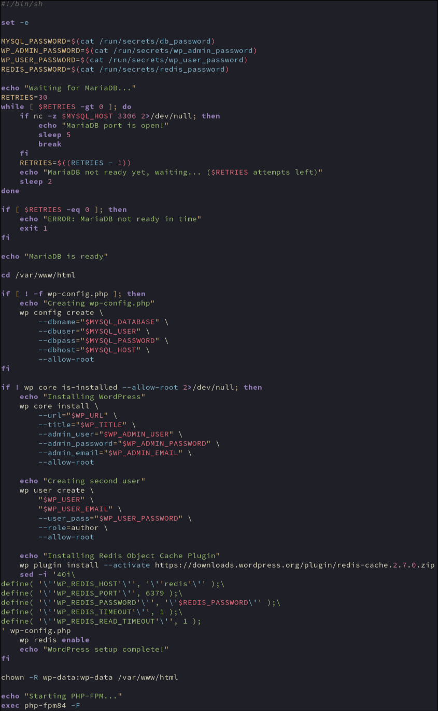

Exit on error
If any command fails, the script will exit and mariadb will not run with incomplete setup
Passwords for database / wordpress user and redis server (bonus) provided via docker secrets
Allow 30 retries (if noconnected by that point there is probably a configuration error)
Use netcat to check when mariadb port is open
sleep 5 allows the server to be fully initialised after port open
Change directory to the wordpress root (host mount)
Check if wp-config.php has been created
Create wp-config using variables from .env file created by Makefile or from docker secrets
Check if wordpress core files are installed
Install core wordpess files and create admin user
Use variables from .env created by Makefile and from docker secrets
Create secondary wordpess user
Install redis object cache plugin
Insert required redis config data into wp-config.php
Enable the Redis Object Cache Plugin (bonus)
Ensure wp-data owns wordpress files as they were created by root
Run php-fpm in the foreground
Prevents docker container from exiting